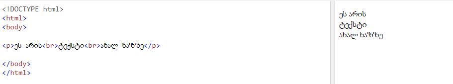

|
|
HTML პარაგრაფები
HTML, < p > ელემენტი განსაზღვრავს ტექსტს :
მაგალითი
HTML ჩვენება
თქვენ ვერ იქნებით დარწმუნებული იმაში თუ როგორ აჩვენებს თქვენს ტექსტს ბრაუზერი
მაგალითი
არ უნდა დაგვავიწყდეს, დახურვის თაგი
თუ თქვენ დაგავიწყდებათ/ გამოტოვებთ დახურვის თაგს შესაძლოა ბრაუზერმა მაინც სწორად აღიქვას
თუმცა ეს არ იქნება სუფთა ნამუშევარი და ასევე შეუძლია მოულოდნელი შედეგები ან შეცდომები აწარმოოს
HTML ხაზის წყვეტები
HTML, < br > ელემენტი განსაზღვრავს შემდეგ გაზზე გადასვლას .
გამოიყენება < br > თუ გსურთ შემდეგ გაზზე გადასვლა (new line) გარეშე :
მაგალითი

< br > თაგი არის ცარიელი თაგი, რაც იმას ნიშნავს, რომ მას არ აქვს დახურვის თაგი.
HTML, < pre > ელემენტი
HTML, < pre > ელემენტი განსაზღვრავს წინასწარ ფორმატირებულ ტექსტს.
ტექსტის შიგნით < pre > ელემენტი არის ნაჩვენები ფიქსირებული სიგანის შრიფტი ,
ის ინარჩუნევბს ხაზებს წყვეტილებს ა.შ.ს:
მაგალითი
|